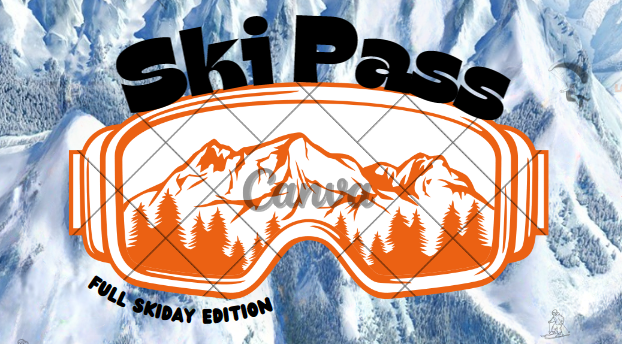

About Ski Pass

Ski Pass is a board game for 2-6 players. Collecting cards, completing routes and dealing with tricky terrain. Players take turns travelling the mountains and conquering the slopes in an adventure to decide who is going to be the leader for your next snowy holiday.
- A board familiar to any ski/snowboard goers
- Simple instructions - tailor the complexity
- Carefully designed game pieces and cards
- Average game time: 60-90 minutes
- Suitable for all ages
Read on to find out more...
Buy Now
I know right, the best game ever. You could own this right now! (within 2-3 working days) all you have to
do is click buy now.
You'll have the best time ever, like better than skiing or snowboarding
And it's a lot cheaper than all that equipment!